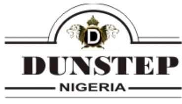

01
Sustainable agriculture
Smarter growing systems, value-added produce and support for agricultural livelihoods.
Learn more ↗
Dunstep Nigeria
We bring together sustainable agriculture, circular solutions and practical innovation to create healthier communities and resilient businesses.
Growing responsible
futures, together.
Who we are
Dunstep Nigeria is a purpose-led enterprise focused on practical solutions for a changing world. We support growth that respects resources, strengthens livelihoods and leaves a positive mark.
Meet Dunstep →What we do
Smarter growing systems, value-added produce and support for agricultural livelihoods.
Learn more ↗Solar and efficient energy solutions that help businesses and communities move forward.
Learn more ↗Waste recovery and resource-conscious practices that turn challenges into value.
Learn more ↗Our impact
Each project is a step toward a stronger local economy and a more resilient environment.
“Progress is more meaningful when every step restores, renews and includes.”
— The Dunstep approach